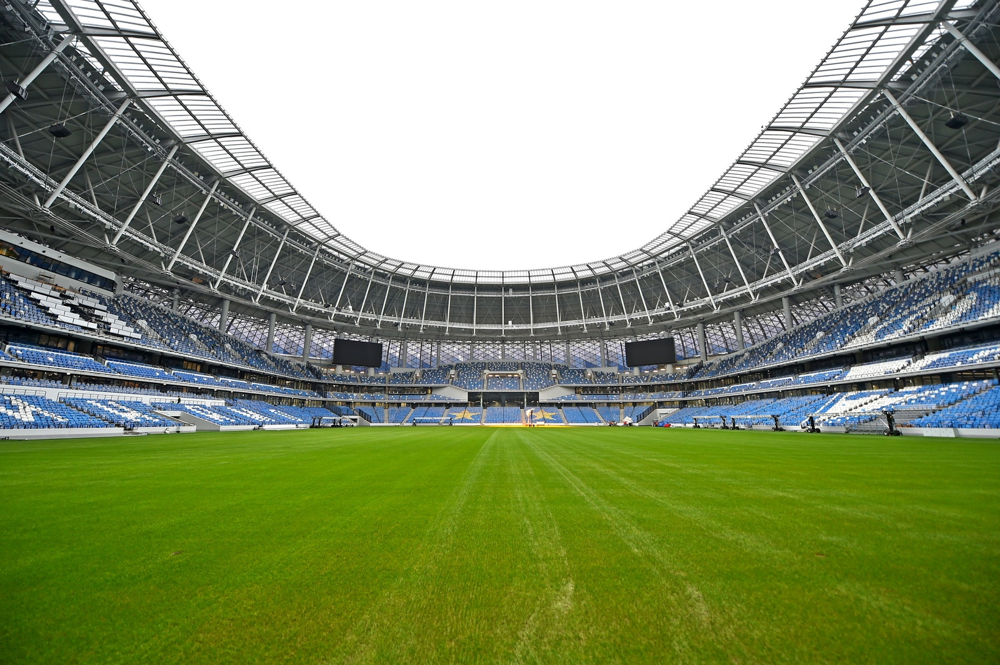

Стадион Динамо
(полное современное наименование «ВТБ Арена — Центральный стадион „Динамо“ имени Льва Яшина») — стадион в Москве, домашний стадион футбольного клуба «Динамо». Расположен в районе Аэропорт, Северного административного округа Москвы.
Находился на реконструкции с 2008 по 2018 год.
История создания
От Всесоюзной Спартакиады до Олимпиады-80, 1928—1977
Первый стадион футбольной команды московского спортивного общества «Динамо» открылся в 1923 году на пустыре возле детской больницы имени Святой Ольги в Орлово-Давыдовском переулке. В первой очереди энтузиасты и члены общества оборудовали футбольное поле, окружили его 3 рядами скамеек, организовали несколько спортивных площадок и возвели небольшое здание, где разместились раздевалки и склад спортинвентаря. Во второй очереди, сданной в мае 1924 года, на стадионе появилась раздевалка с горячим душем, расположившаяся в бывшем здании морга. С расширением общества и ростом популярности команды число болельщиков на соревнованиях выросло до 5 тысяч человек. Постепенно назрела потребность в более просторном стадионе с несколькими полями, просторными раздевалками и комнатами для собраний — капитаны были вынуждены вести учебный процесс в служебном помещении общества у Крымского моста.
17 августа 1928 года стадион был официально открыт матчем футбольного турнира Спартакиады, в котором встретились сборные Белорусской ССР и рабочих клубов Швейцарии. Открытие Спартакиады комментировал Вадим Синявский, в будущем — знаменитый советский спортивный комментатор. 29 мая 1929 года Синявский провёл первый в СССР спортивный репортаж, широко транслировавшийся в радиоэфире: на футбольном поле встретились сборные РСФСР и Украинской ССР. В августе 1929 года на стадионе прошёл первый Всесоюзный слёт пионеров.
К открытию Спартакиады были возведены 3 бетонные трибуны на 25 тысяч зрителей, поднявшиеся на высоту 16 метров. В плане стадион с прямыми северной и южной трибунами и полукруглой западной, где располагался главный вход, напоминал вытянутую полукруглую подкову. Под трибунами располагались 3 спортивных зала для гимнастики, бокса и борьбы, 2 тира на 50 и 100 метров, раздевалки и душевые, кабинеты врачей и служебные помещения. К востоку от стадиона на территории Петровского парка располагались запасное футбольное поле, 4 баскетбольные площадки, 4 городошные площадки, 7 летних теннисных кортов. В 1929 году на стадионе открылся трек с перепадами высот, который по оригинальной задумке архитекторов опоясывал поле широкой лентой и примыкал к гаревой легкоатлетической дорожке. Совмещение трассы со стадионом оказалось неудачным решением: мотоциклисты и велосипедисты мешали другим спортсменам, а трек из-за недостаточного угла наклона был неудобен для соревнований. Впоследствии трасса не использовалась по назначению: в дни значительных соревнований там устанавливались скамейки из городских скверов и парков, на которых располагались дополнительные зрители.
Последний предвоенный матч прошёл на стадионе между московским «Динамо» и сталинградским «Трактором» 19 июня 1941 года. В годы Великой Отечественной войны на стадионе был организован военно-учебный лагерь, где с 27 июня 1941 года начали формироваться отряды Отдельной мотострелковой бригады особого назначения НКВД СССР. Бригада была укомплектована чекистами, слушателями Высшей пограничной школы и Центральной школы НКВД, студентами Государственного центрального института физической культуры, динамовцами и членами других спортивных обществ. В помещениях тира была развёрнута подготовка снайперов. Стадион был замаскирован от авианалётов, зимой 1942 года на футбольном поле были высажены молодые ели. С перемещением фронта на запад на стадионе возобновились спортивные соревнования: 18 июля 1944 года после долгого перерыва команда «Динамо» приняла соперников из «Торпедо» (3:2), через месяц на стадионе состоялся финал первого за 5 лет Кубка СССР («Зенит», Ленинград — ЦСКА, Москва, 2:1). Первый матч мирного времени 3 июля 1945 года послужил началом футбольного «бума» в СССР. В 1947 году на стадионе с особой помпой проходили праздничные мероприятия, посвящённые 800-летию Москвы. В 1953 году на стадионе было введено регулярное электрическое освещение. Первые попытки освещать игровое поле, чтобы проводить соревнования в вечерние часы, не отвлекая поклонников спорта от работы, относятся к 1930-м годам. Осенью 1933 года несколько матчей прошли при свете подвесных электрических ламп, но уровень освещения оказался недостаточным. В 1940 году по углам стадиона были установлены высокие вышки с прожекторами, при свете которых московское «Динамо» приняло динамовцев из Риги (4:2), но тогда электроосвещение было сочтено экономически нецелесообразным, и это мнение изменилось только с ростом популярности футбола. С открытием в 1956 году Большой спортивной арены Центрального стадиона имени В. И. Ленина в Лужниках стадион «Динамо» потерял статус главного стадиона страны, но не утратил роли в спортивной жизни СССР и Москвы. В 1957 году на его территории начал работу плавательный бассейн. В 1964 году на стадионе появилось электронное световое табло, заменившее башни восточной трибуны, на которых аршинными буквами обозначались наименования команд и счёт матча.
От Олимпиады-80 до начала реконструкции 2000-х годов, 1977—2010
Планировалось, что стадион станет одной из основных площадок Летних Олимпийских игр 1980 года в Москве, поэтому в 1977—1979 годах стадион прошёл капитальную реконструкцию. Северная, южная и восточная трибуны были демонтированы и вновь возведены. Подтрибунные помещения были обновлены, над стадионом были подняты 4 высокие мачты для прожекторов, которые позволили транслировать олимпийские соревнования в цвете. Были построены административное здание и гостиница, введены в эксплуатацию футбольно-легкоатлетический манеж, гимнастический зал и каток с искусственным льдом, строительство которых велось с 1971 года. Во время Олимпиады-80 стадион принял футбольный турнир[1][2][5]. Стадион принимал матчи сборных СССР и России, финалы кубка, а с конца 1980-х годов стал использоваться для проведения концертов. 23 июля 1996 года на стадионе состоялся первый в стране концерт Deep Purple, а во время выступления Майкла Джексона с концертной программой HIStory поля стадиона заняла 71 тысяча поклонников. В рамках реконструкции 1998 года поле было оборудовано подогревом, а деревянные скамьи были в соответствии с международными футбольными стандартами заменены на пластиковые сиденья, что снизило вместимость стадиона до 36,5 тысяч человек. В том же году стадион принял первые в истории Всемирные юношеские игры. В 1999 году у входа на северную трибуну был установлен памятник легендарному игроку «Динамо», лучшему голкиперу XX века Льву Яшину.
С момента создания «Динамо» превратился из футбольного стадиона в крупный спортивный комплекс с большой и малой спортивными аренами, системой теннисных кортов, 2 плавательными бассейнами (крытым с дорожками 25 метров и открытым с чашей 50 × 25 метров), крупнейшим в Европе гимнастическим залом (54 × 36 метра), катком 72 × 36 метра) и футбольно-легкоатлетическим манежем (116 × 66 метров при высоте 15 метров). С момента постройки манеж служил основной тренировочной площадкой команды в осенне-зимний период, впоследствии его поле было перепрофилировано в исключительно футбольное и стало площадкой для официальных игр. С 1996 года манеж не использовался, в 2003 там были возобновлены тренировки команды и СДЮШОР по футболу имени Л. И. Яшина[1]. Постепенно футбол стал преобладающим видом спорта, и «Динамо» потребовалась общая реконструкция, чтобы оставаться действующим стадионом. 3 октября 2007 года мэрия Москвы приняла постановление «О комплексной реконструкции территории Центрального стадиона „Динамо”». Проект реконструкции был разработан Институтом Генплана Москвы и предполагал реконструкцию самого стадиона, ряда хозяйственных построек, малой спортивной арены, главного административного здания и бассейна, находившегося в аварийном состоянии. Стадион рассматривался как возможная площадка Чемпионата мира по футболу, поэтому, в соответствии с требованиями ФИФА, его поле планировалось развернуть на 90 градусов и расположить по оси север-юг. Завершение реконструкции стадиона было запланировано на 2011 год, объектов Петровского парка — на 2012 год. 22 ноября 2008 года в присутствии 24 тысяч зрителей прошёл прощальный матч с «Томью», после чего стадион закрылся на реконструкцию.
Основные характеристики (до реконструкции)
<- Размеры поля: 105 х 68 метров
- Вместимость — 36 540 человек
- Травяной покров — натуральный
- Освещение: 1 400 люкс (4 осветительных мачты)
- Табло — одно, на западной трибуне, электронное
- Размеры табло: 28 х 8,5 метров
Реконструкция
Проект
Согласно проекту «ВТБ Арена парк», одна крыша должна объединить Большую спортивную арену, рассчитанную приблизительно на 26,3 тысячи зрителей, Малую спортивную арену вместимостью от 11,5 до 14 тысяч зрителей, где можно будет проводить матчи по хоккею, смешанным единоборствам, профессиональному боксу, баскетболу и концертно-зрелищные мероприятия, а также досугово-развлекательный комплекс. Изначально предполагалось, что новый стадион «Динамо» попадёт в заявочную книгу на проведение матчей чемпионата мира 2018 года, однако этого не произошло, и его вместимость была уменьшена с предварительных 45 до проектных 26 тысяч зрителей.
Архитектором зоны городской постройки является Сергей Чобан, для доработки спортивной части проекта был приглашён американский архитектор Дэвид Маника (англ. David Manica)[12]. В ответ на претензии болельщиков «Динамо» он решил видоизменить проект, пообещав предоставить болельщикам трёхъярусную трибуну, напротив которой будет располагаться большое табло, собственное лобби и фойе со смотровой площадкой. Западная трибуна после укрепления её фундамента[* 1] будет отделена от строящейся арены и станет частью музея «Динамо». Спортивный комплекс в Петровском парке носит название «ВТБ Арена», а сам стадион получил имя Льва Яшина.
Ход работ
Первоначально стадион планировалось реконструировать с сохранением фасадов[* 2], как того требовал охранный статус памятника архитектуры, однако постановлением правительства Москвы от 12 июля 2011 года границы территории объекта культурного наследия «Стадион „Динамо“» были изменены[15], после чего были снесены восточная, северная и южная трибуны[16]. Единственным подлинным фрагментом, оставшимся от исторического здания, стала западная трибуна. Также были демонтированы осветительные мачты, которые, благодаря своим размерам, были одним из ориентиров северной части Москвы.
В ноябре 2012 года инвестор строительства, компания «ВТБ-Арена», заявил, что снесённые стены стадиона будут восстановлены по лазерным обмерам, проведённым до сноса, а также обещал провести реставрацию и вернуть на своё место оригинальные барельефы работы скульптора Сергея Меркурова.
Точечное доскональное сканирование позволит один в один восстановить те стены, которые из-за аварийного состояния не могли быть сохранены.
Летом 2013 года был закончен нулевой цикл работ. Реконструкция находится на этапе укрепления фундаментов сохраняемой исторической стены западной трибуны.
1 апреля 2014 года футбольные болельщики, недовольные застройщиком, провели пикет возле снесённого стадиона, а также передали представителям «ВТБ-Арена парка» манифест со своими требованиями.
27 ноября 2018 года реконструкция спортивного объекта была завершена и он получил разрешение на ввод в эксплуатацию. Открылся стадион ледовым шоу 20 декабря 2018 года, первый матч на малой арене прошёл 4 января 2019 года[19], а открытие футбольной части «ВТБ-Арены» произошло 26 мая 2019 года.